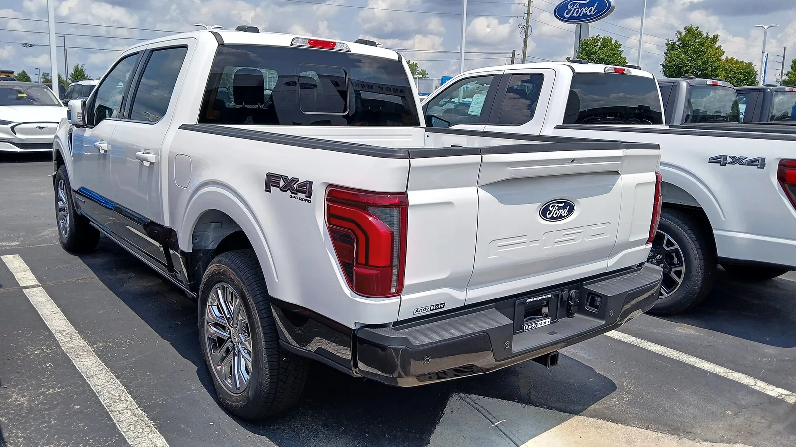
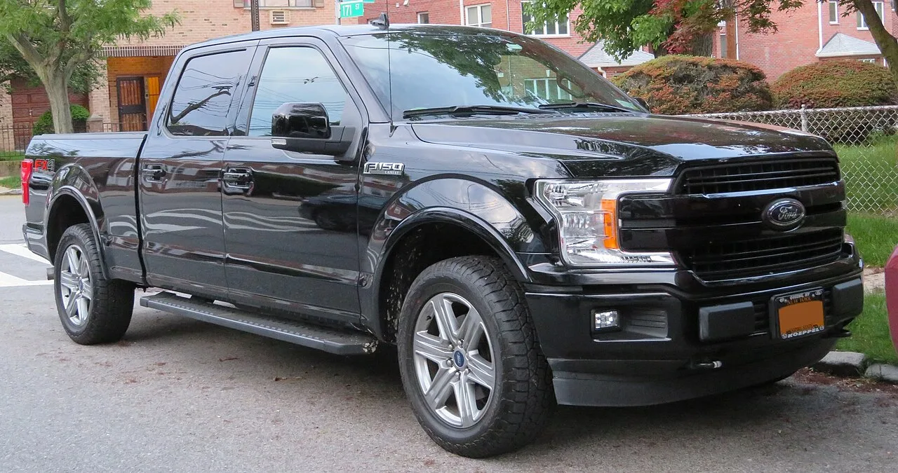

▲ 2027년형 F-150은 기본 엔진을 바꾸고 V8 선택 폭을 넓힌다 ⓒ Wikimedia Commons
포드가 F-150 랩터의 값을 4,010달러 내렸습니다. 7만9,005달러에서 7만4,995달러입니다.
그런데 2026년형과 같은 사양으로 맞추려면 4,120달러짜리 옵션 패키지가 필요합니다.
결과적으로 110달러를 더 내게 됩니다. 같은 차를 사는데 값은 올랐고, 표시가는 내려갔습니다.
1. 엔진 라인업이 통째로 바뀐다
| 엔진 | 출력 | 적용 |
|---|---|---|
| 단종 | ||
| 3.0L 에코부스트 | 405마력 / 430lb-ft | XL·STX·XLT·하위 라리아트 기본 |
| 5.0L V8 | — | 킹 랜치·플래티넘 등 상위 트림 옵션 확대 |
| 3.5L 에코부스트 | 450마력 / 510lb-ft | 랩터 |
기본 엔진이 2.7리터에서 3.0리터로 올라갑니다. 배기량이 커지고 출력도 405마력으로 높아집니다.
표면적으로는 소비자에게 유리해 보입니다. 같은 트림에서 더 큰 엔진을 받게 되기 때문입니다. 다만 배기량이 커지면 연비와 세금(국내 기준)에 영향이 갑니다.
2. V8을 다시 넓히는 이유
5.0리터 V8이 킹 랜치와 플래티넘 같은 상위 트림에서 다시 선택 가능해집니다.
이건 흐름을 거스르는 결정입니다. 지난 10여 년간 픽업 시장은 대배기량 자연흡기 V8에서 소배기량 터보 V6로 이동해 왔습니다. 배출가스 규제와 연비 기준 때문입니다.
| 요인 | 내용 |
|---|---|
| 램의 헤미 부활 | 램이 V8 라인을 되살리며 수요를 흡수했다 |
| 구매층 선호 | 픽업 구매층은 V8 사운드와 내구 인식을 중시한다 |
| 규제 완화 | 미국의 연비·배출 규제 기조 변화 |
| 수익성 | 상위 트림 옵션은 마진이 크다 |
램이 헤미 V8을 되살린 것이 직접적 계기로 지목됩니다. 경쟁사가 V8을 팔면 V8이 없는 쪽은 선택지에서 빠집니다.

▲ 5.0리터 V8이 킹 랜치·플래티넘 등 상위 트림 옵션으로 확대된다
3. 랩터 가격의 구조
| 항목 | 금액 |
|---|---|
| 2026년형 랩터 | 79,005달러 |
| 2027년형 랩터 (800A 기본) | 74,995달러 |
| 표시가 인하 | -4,010달러 |
| 801A 패키지 (기존 사양 복원) | +4,120달러 |
| 동일 사양 실구매 | 79,115달러 — 110달러 인상 |
기본 패키지가 801A에서 800A로 내려가면서 세 가지가 빠졌습니다.
| 항목 |
|---|
| 14스피커 B&O 언리시드 오디오 |
| 뒷좌석 열선 |
| 헤드업 디스플레이 |
이 방식은 앞서 닛산 무라노가 쓴 것과 같은 계열입니다. 무라노는 하위 트림을 없애 시작가를 올렸고, F-150 랩터는 기본 사양을 덜어내 시작가를 내렸습니다.
방향은 반대지만 목적은 같습니다. 표시가라는 숫자를 원하는 방향으로 움직이는 것입니다.
4. 왜 표시가를 내려야 했나
| 항목 | F-150 랩터 | 램 1500 RHO |
|---|---|---|
| 가격 | 74,995달러 | 74,995달러 |
| 엔진 | 3.5L 트윈터보 V6 | 3.0L 트윈터보 직렬 6기통 |
| 최고출력 | 450마력 (5,850rpm) | 540마력 |
| 최대토크 | 510lb-ft (691Nm) | 521lb-ft (706Nm) |
| 출력 차 | — | +90마력 |
가격이 정확히 같아졌습니다. 이건 우연이 아니라 맞춘 것으로 보는 편이 자연스럽습니다.
다만 같은 값에서 램이 90마력 앞섭니다. 성능으로 이길 수 없으니 가격표에서만이라도 동률을 만든 셈입니다.
구매자 입장에서는 비교가 단순해집니다. 두 차의 표시가가 같다면, 남는 변수는 출력과 기본 사양과 브랜드 선호입니다.

▲ 유출된 오더 가이드에 하이브리드 관련 내용은 없었다
5. 값을 낮춘 트림이 또 있다
포드는 랩터 외에 트레모에서도 같은 방식을 씁니다.
| 트림 | 구성 |
|---|---|
| 트레모 400A | 성능 사양은 유지, 프리미엄 오디오·열선 시트·HUD 제외 |
| 랩터 800A | 위와 동일한 구성 |
이 전략에는 합리적인 면도 있습니다. 오프로드 성능을 원하는데 오디오와 열선 시트는 필요 없는 구매자에게는 실제로 4,120달러를 아끼는 선택지가 생긴 것입니다.
문제는 표시가만 보고 "값이 내렸다"고 읽는 경우입니다. 광고와 기사 제목에는 7만4,995달러라는 숫자만 남습니다.
6. 국내에서는
F-150은 국내에도 정식 판매됩니다. 다만 트림 구성과 가격 체계는 미국과 다릅니다.
| 항목 | 이유 |
|---|---|
| 기본 엔진 | 3.0리터로 바뀌면 자동차세 구간이 달라진다 |
| V8 선택 가능 여부 | 국내는 도입 트림이 제한적이다 |
| 패키지 구성 | 800A/801A 구분이 국내에도 적용되는지 |
| 인증 시점 | 연식변경 물량 도입까지 시차가 있다 |
국내는 배기량 기준 자동차세를 쓰므로 첫 번째 항목이 직접적입니다. 2.7리터에서 3.0리터로 올라가면 연간 세액이 늘어납니다.

▲ 국내는 배기량 기준 자동차세라 기본 엔진 변경이 세금에 직접 영향을 준다
7. 정리
2027년형 F-150에서 2.7리터 에코부스트가 단종되고 3.0리터 에코부스트(405마력, 430lb-ft)가 기본 엔진이 됩니다. 5.0리터 V8은 킹 랜치·플래티넘 등 상위 트림으로 확대됩니다.
랩터는 7만9,005달러에서 7만4,995달러로 4,010달러 내렸습니다. 다만 기본이 800A로 바뀌며 14스피커 B&O·뒷좌석 열선·헤드업 디스플레이가 빠졌고, 801A(4,120달러)를 넣으면 실질 110달러 인상입니다.
인하 이유는 램 1500 RHO입니다. 같은 7만4,995달러에 540마력으로 랩터(450마력)보다 90마력 앞섭니다. 유출된 오더 가이드에 하이브리드 관련 내용은 없었습니다.